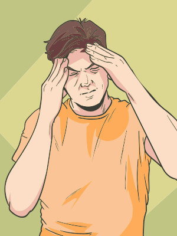

Inicialmente, optamos por utilizar o termo condições para abranger síndromes, doenças, transtornos e distúrbios.
As bases biológicas dos transtornos depressivos podem ser parcialmente explicadas por meio da teoria monoaminérgica da depressão. Essa proposição sugere que a depressão é consequência de menor disponibilidade de aminas biogênicas cerebrais, particularmente de serotonina, noradrenalina e/ou dopamina.

Tal teoria foi reforçada pelo sucesso do tratamento com medicamentos antidepressivos, cujo mecanismo de ação envolve maior disponibilidade desses neurotransmissores na fenda sináptica, seja pela inibição do processo de receptação, seja pela inibição da enzima responsável pela degradação, a monoaminoxidase (MAO). No entanto, como esses medicamentos não são eficazes em todos os indivíduos com depressão, sugere-se que a deficiência na sinalização de monoaminas não seja suficiente para explicar completamente as causas dessa condição.
Pacientes com depressão apresentam níveis séricos de citocinas pró-inflamatórias aumentados, níveis esses que voltam ao normal com o tratamento com alguns antidepressivos. Sendo assim, observa-se uma correlação das células gliais com neuroinflamação (neuroinflamação neurogênica) e depressão. A hipótese imunológica propõe que a elevação na produção de citocinas pró-inflamatórias resulta nos sintomas relacionados à depressão, pois estas citocinas atuariam como neuromoduladores, intervindo nos aspectos neuroquímicos, neuroendócrinos e comportamentais dos transtornos depressivos.